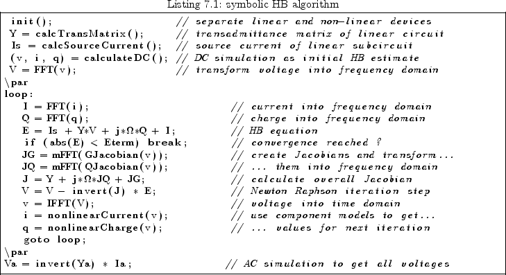

Next:
Large-Signal S-Parameter Simulation
Up:
Harmonic Balance Analysis
Previous:
Going through each Step
A Symbolic HB Algorithm
In this final section, a harmonic balance algorithm in symbolic language is presented.

This document was generated by
Stefan Jahn
on
2007-12-30
using
latex2html
.